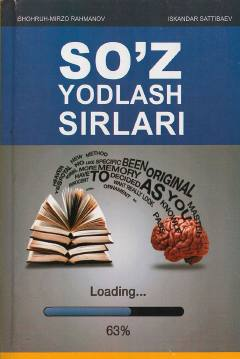

SYIngliz tilidagi so'zlarni tezkor va samarali yodlash sirlari haqida amaliy qo'llanma.
Ushbu qo'llanma ingliz tilidagi so'zlarni tezkor va samarali yodlash usullari, mnemonik texnikalar hamda lug'at boyligini oshirish sir-sinoatlariga bag'ishlangan. Kitobda mualliflarning shaxsiy tajribalari, hayotiy misollar, test yechishga oid tavsiyalar va xotirada saqlash mashqlari keltirilgan. Qo'llanma abituriyentlar, talabalar va barcha til o'rganuvchilar uchun mo'ljallangan.